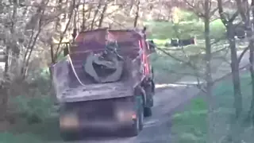
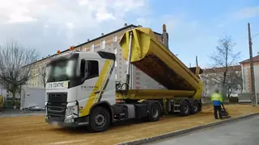
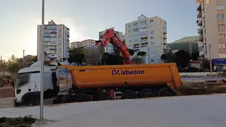
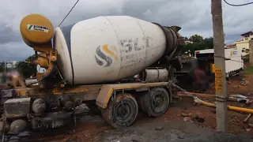
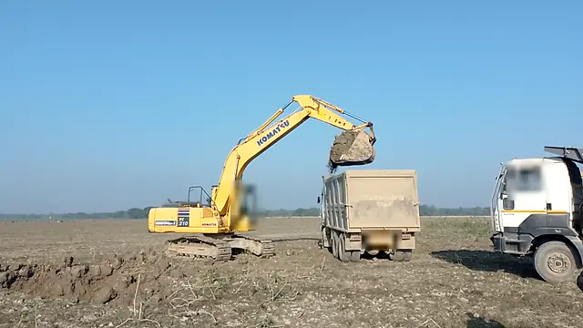
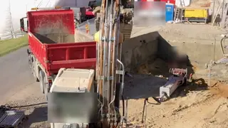

Сокол
Жилой дом, секция Б
Смена 08:00–20:00
на площадке
8
не видно
1
номер не прочитан
1
подтвердить
3
Живой режим
14:40
Пермь, UTC+5
· данные 2 с назад
Пример · кадры реальные
Машины на площадке
сейчас 8, выехали 4
Пример
Рапорт за смену
Выгрузить смену в Excel
Кадр
Номер
Техника
Въехал
Состояние
На площадке
1
4821 РМ
59
Экскаватор
колёсный
въехал
07:46
в движении, на месте
6
ч
54
мин
3
К 093 ТМ
159
Фургон
в часы техники не идёт
въехал
09:05
стоит
5
ч
35
мин

2
Т 317 ОР
159
Самосвал
под погрузкой у экскаватора
въехал
11:20
стоит 38 мин
причина не указана
3
ч
20
мин

5
Е 482 КМ
159
Самосвал
полуприцеп · вопрос «Тот же?»
въехал
13:58
не видно 16 мин
не подтверждено, в расчёт не идёт
42
мин

7
Н 774 СА
159
Самосвал
под погрузкой
въехал
14:12
стоит 3 мин
28
мин

4
В 905 ХА
159
Бетоновоз
миксер
въехал
14:21
стоит 6 мин
19
мин
2
5607 УК
59
Экскаватор
малый
въехал
14:29
в движении
11
мин
1
номер не читается
Самосвал
введите номер
въехал
14:33
в движении
7
мин
Выехали за смену
4

6
Х 731 АМ
159
Самосвал
въехал
09:31
выехал 10:02
31
мин
10
С 446 НЕ
159
Самосвал
въехал
12:10
выехал 12:58
48
мин

9
У 352 КС
159
Самосвал
выезд без въезда
нет
выехал 13:41
въезда в журнале нет
не посчитано
8
О 218 ВК
159
Самосвал
въехал
12:53
выехал 14:05
1
ч
12
мин
Выгрузить смену в Excel
Кадры: открытые ролики Wikimedia Commons, лица и номера размыты. Авторы и лицензии:
1
Sounds of Changes, CC BY 3.0 —
«Building site Ljubljana 2»
, Wikimedia Commons
2
ŠJů, CC BY 4.0 —
«Retenční nádrž Libušská, čištění vtoku»
, Wikimedia Commons
3
Sounds of Changes, CC BY 3.0 —
«Building site on the Igriška and Erjavčeva street»
, Wikimedia Commons
4
Gpkp, CC BY-SA 4.0 —
«Cement mixer truck in Bangalore (2025)»
, Wikimedia Commons
5
Cjp24, CC BY-SA 4.0 —
«Volvo FH 500 (video)»
, Wikimedia Commons
6
KEmel49, CC BY-SA 4.0 —
«Excavator digging land and loading truck»
, Wikimedia Commons
7
Satirdan kahraman, CC BY-SA 4.0 —
«Hafriyat kamyonuna yükleme yapan kepçe videosu»
, Wikimedia Commons
8
Hangman'sDeath, CC0 —
«1050 Wien, U4 Station Pilgramgasse Baustelle Wienfluss-Kanal Bagger 03 2023-10-05»
, Wikimedia Commons
9
KaiKemmann, CC BY-SA 4.0 —
«Excavator loading a dump truck, Oberlech 321, 6764 Lech am Arlberg, Austria»
, Wikimedia Commons
10
Triplec85, CC BY-SA 4.0 —
«2018-05-07 Ein Muldenkipper im Steinbruch Unterbalbach»
, Wikimedia Commons
Подтвердить: 3